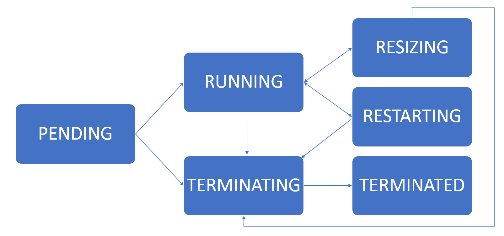

Clusters API
Using the utility function
The function createDatabricksCluster will create a Databricks® cluster.
It relies on the databricks.Cluster class, and its
methods and helper functions. It is an easy way to create a cluster,
and it offers a few options. If there is a need for more fine grained
control of the cluster creation options, please use the underlying
class and its APIs directly, as described in the next sections.
Arguments:
name : The name of the cluster.
numWorkers : The number of workers in the cluster. This can be a
single number or an array of lower and upper bound,
e.g. for a cluster between 2 and 10 workers the value
should be [2, 10]. If 0 is used then a single node cluster
will be created, as distinct from a cluster of size 1.
useMATLAB : Optional argument to install MATLAB runtime on the
cluster. Default is true. If a Docker Image URL is
provided this option is ignored.
create : Optional argument to set to true if the cluster should
be created immediately. If set to false, the function
will only return an object that can be used for
creating a cluster. This is useful for creating Spark
jobs. Default is true.
dockerAuthFile : The name of a file containing docker information,
image URL, user name, and password. This can be
used to easily use docker settings when creating a
cluster. The filename can be an absolute path or
relative path. Currently, only no password or
basic_auth is supported.
The "spark_version" field is optional, but is
helpful for determining spark_version. It's
required if the image tag doesn't reflect the
Databricks runtime version.
{
"url": "some.repo.com/matlab/databricks/desktop:r2025a-dbx15.4",
"basic_auth": {
"username": "b304<REDACTED>40",
"password": "ol_8<REDACTED>qr"
},
"spark_version": "15.4.x-scala2.12"
}
If the repository doesn't need authentication, the
file may consist of only the url.
dockerURL : Optional argument to specify the URL of a Docker Image.
When using Docker the spark conf
spark.databricks.unityCatalog.volumes.enabled
property will be set to "true".
dockerUsername : Optional argument to specify the docker registry username.
dockerPassword : Optional argument to specify the docker registry password.
sparkVersion : Set this to set a given spark_version otherwise
a version based on the current default Databricks Runtime
will be used. This value is the Databricks Cluster API
spark_version field and is not strictly the version of Spark
used. It has the form: 15.4.x-scala2.12. The specific value
for a given Databricks runtime can be verified in the
Databricks UI.
nodeTypeId : Set this to pick a different node type than what
is set in the users default settings.
initScriptPath : Specify a non default initscript path.
If not specified and the default script is not present
the local script will be uploaded to the user's workspace.
% By default the initscript is stored in:
<settings: interfaceDirectory>/runtimes/runtime_install.sh
interfaceDirectory : /Volumes path under which MathWorks files can be stored.
release : MATLAB release of the form R2024a for the runtime to install.
By default the release of MATLAB in use is used.
runtimePath : Specify a path to to a MATLAB runtime .zip file.
/Volumes, DBFS and http paths are supported.
policyName : Set the name of the cluster policy used to create the cluster.
policyId : Set the ID of the cluster policy used to create the cluster.
ML : Selects a Databricks Runtime version with ML functionality
enabled.
GPU : Selects a Databricks Runtime version with GPU functionality
enabled.
photon : Selects a Databricks Runtime version with Photon functionality
enabled.
accessMode : Data security mode decides what data governance model to
use when accessing data from a cluster.
Default: databricks.datastructures.DataSecurityMode.SINGLE_USER
sparkConfig : Additional Spark Conf pair settings to apply to a cluster
e.g. databricks.SparkConfPair({'mykey', 'myvalue'})
sparkEnvPair : Additional environment variable(s) to apply to a cluster
e.g. databricks.SparkEnvPair('MyVariable','MyValue')
To set multiple values:
databricks.SparkEnvPair({'SPARK_WORKER_MEMORY','28000m';'SPARK_LOCAL_DIRS','/local_disk0'})
clusterTag : Additional ClusterTags to apply to a cluster
e.g. databricks.ClusterTag('myKey', 'myValue');
autoterminationMinutes : Specifies the number of minutes of idle time after
which the cluster will be stopped.
authMethod : A matlab.databricks.AuthMethod.
profileName : A configuration file profileName value.
enableLogging : Enables logging of the initscript and other steps.
The default is false.
logDir : The location to which logs are written, the default is:
dbfs:/cluster-logs
If using /Volumes (Public Preview) additional restrictions
apply. See: https://docs.databricks.com/aws/en/compute/configure#compute-log-delivery
updateClusterId : Update the cluster Id value stored in the default
or specified cluster. The default is false.
verbose : Enable additional feedback. Default is true.
Examples:
% Create a cluster with 4 workers that installs the MATLAB runtime
cl = createDatabricksCluster('my-cluster', 4);
% Create a cluster definition without actually creating the cluster. This is
% useful when defining a cluster to be used in a Job.
cl = createDatabricksCluster('my-sl-cluster', 4, create = false);
% Create a cluster without a MATLAB runtime installed. This cluster
% can still be used for interactively handling a Databricks session
% from within MATLAB, but no compiled MATLAB code can run on the
% cluster.
cl = createDatabricksCluster('plain-cluster', 4, useMATLAB = false);
For further docker related information, see also: ContainerServices.
% Create a cluster based off a Docker image
cl = createDatabricksCluster('my-docker-cluster', 2, ...
'dockerURL', 'myrepo.com/mathworks/databricksruntime:17.3-LTS-R2024b', ...
'dockerUsername', 'myusername', ...
'dockerPassword', 'mypassword');
% Create a cluster using an init script stored on a Volume
cl = createDatabricksCluster("myVolumeCluster", 0, sparkVersion="16.4.x-scala2.12",...
initScriptPath="/Volumes/main/default/myvolume/myDir/runtime_install.sh");
Set the name of the cluster
The name of the cluster can be set using the property cluster_name.
cl = databricks.Cluster;
cl.cluster_name = 'My Cluster Name';
Set number of workers or autoscaling
The number of workers in the cluster can be set with one of two methods. Either by setting the number of workers through a single scalar number or by specifying autoscaling by providing the min/max number of workers.
If num_workers is the number of worker nodes that a given cluster should have. Then the cluster will have one Spark™ Driver and num_workers Executors for a total of num_workers + 1 Spark nodes. Creating a Single Node cluster is described below.
For example, to specify a fixed number:
cl = databricks.Cluster();
cl.setNumWorkers(25);
To specify autoscaling:
cl = databricks.Cluster();
cl.setNumWorkers([2 10]);
Configure a Docker Image
As an alternative to providing an init script to configure cluster nodes a Docker®
image URL may also be configured, using the Cluster API this is done using setDockerImage.
Using string/character vector arguments:
cl = databricks.Cluster;
cl.setDockerImage('http://mydockerrepourl.example.com', 'myusername', 'mypassword');
Using data structures as can be used with REST API return values for example:
cl = databricks.Cluster;
dbCredentials.username = "myusername";
dbCredentials.password = "mypassword";
dbAuth = databricks.datastructures.DockerBasicAuth(dbCredentials);
dockerSettings.url = "http://mydockerrepourl.example.com";
dockerSettings.basic_auth = dbAuth;
dockerImage = databricks.datastructures.DockerImage(dockerSettings);
cl.setDockerImage(dockerImage);
Note, it is not good practice to include passwords in source code, please consider reading the value from a file or other external source in real world code.
Set a policy id
A cluster policy applies rules to the creation of clusters. Only admin users can create, edit, and delete policies. The policy rules limit the attributes or attribute values available for cluster creation. Setting the policy_id for a cluster indicates which policy should be used to validate its creation.
cl = databricks.Cluster();
cl.setPolicyId('ABCD000000000000');
If a policy_id value pair is specified in the databricks-settings.json file it will be applied to Cluster objects by default. This can be helpful if a given policy is always required e.g. for members of a given department.
List available Spark Versions
Return the list of available Spark versions. These versions can be used when launching a cluster.
cl = databricks.Cluster();
versions = cl.getSparkVersions
versions =
50x2 table
key name
________________________________ _____________________________________________________________
"10.4.x-cpu-ml-scala2.12" "10.4 LTS ML (includes Apache Spark 3.2.1, Scala 2.12)"
"10.4.x-gpu-ml-scala2.12" "10.4 LTS ML (includes Apache Spark 3.2.1, GPU, Scala 2.12)"
"10.4.x-photon-scala2.12" "10.4 LTS Photon (includes Apache Spark 3.2.1, Scala 2.12)"
"10.4.x-scala2.12" "10.4 LTS (includes Apache Spark 3.2.1, Scala 2.12)"
"11.3.x-cpu-ml-scala2.12" "11.3 LTS ML (includes Apache Spark 3.3.0, Scala 2.12)"
"11.3.x-gpu-ml-scala2.12" "11.3 LTS ML (includes Apache Spark 3.3.0, GPU, Scala 2.12)"
"11.3.x-photon-scala2.12" "11.3 LTS Photon (includes Apache Spark 3.3.0, Scala 2.12)"
"11.3.x-scala2.12" "11.3 LTS (includes Apache Spark 3.3.0, Scala 2.12)"
"12.2.x-cpu-ml-scala2.12" "12.2 LTS ML (includes Apache Spark 3.3.2, Scala 2.12)"
"12.2.x-gpu-ml-scala2.12" "12.2 LTS ML (includes Apache Spark 3.3.2, GPU, Scala 2.12)"
"12.2.x-photon-scala2.12" "12.2 LTS Photon (includes Apache Spark 3.3.2, Scala 2.12)"
[TRUNCATED]
List available machine (node) types
List of supported Spark node types. These node types can be used when launching a cluster. Note that node types will differ if using AWS® or Azure®.
For example:
cl = databricks.Cluster();
nodeList = cl.getNodeTypes
nodeList =
216x22 table
node_type_id memory_mb num_cores description instance_type_id is_deprecated category support_ebs_volumes support_cluster_tags num_gpus node_instance_type is_hidden support_port_forwarding display_order is_io_cache_enabled node_info photon_worker_capable photon_driver_capable is_encrypted_in_transit is_graviton require_fabric_manager min_photon_version
_______________________ __________ _________ _______________________ _______________________ _____________ ___________________________________ ___________________ ____________________ ________ __________________ _________ _______________________ _____________ ___________________ __________ _____________________ _____________________ _______________________ ___________ ______________________ __________________
{'Standard_DS3_v2' } 14336 4 {'Standard_DS3_v2' } {'Standard_DS3_v2' } false {'General Purpose' } true true 0 1x1 struct false true 0 false 1x1 struct true true false false false {[<missing>]}
{'Standard_DS4_v2' } 28672 8 {'Standard_DS4_v2' } {'Standard_DS4_v2' } false {'General Purpose' } true true 0 1x1 struct false true 0 false 1x1 struct true true false false false {'11.3' }
{'Standard_DS5_v2' } 57344 16 {'Standard_DS5_v2' } {'Standard_DS5_v2' } false {'General Purpose' } true true 0 1x1 struct false true 0 false 1x1 struct true true false false false {'11.3' }
{'Standard_D4s_v3' } 16384 4 {'Standard_D4s_v3' } {'Standard_D4s_v3' } false {'General Purpose' } true true 0 1x1 struct false true 0 false 1x1 struct true true false false false {'11.3' }
{'Standard_D8s_v3' } 32768 8 {'Standard_D8s_v3' } {'Standard_D8s_v3' } false {'General Purpose' } true true 0 1x1 struct false true 0 false 1x1 struct true true false false false {'11.3' }
[TRUNCATED]
Create a new Spark Cluster
Creating a new Spark cluster while acquiring new instances from the cloud provider if necessary is possible if the user has specified the number of workers.
% Configure a spark cluster
cl = databricks.Cluster;
cl.cluster_name = 'Sample Cluster'; % user specified name
cl.spark_version = '17.3.x-scala2.13'; % key from the getSparkVersions
cl.setNumWorkers([2 10]); % autoscaling cluster min 2, max 10
% Create the cluster
cl.create();
The output of a successful creation will be the addition of a cluster_id
property to the cluster object.
cl =
Cluster with properties:
cluster_name: 'Sample Cluster'
spark_version: '17.3.x-scala2.13'
node_type_id: 'i3.xlarge'
Version: 2
autoscale: [1x1 struct]
cluster_id: '0531-031912-trill440'
The call to create is asynchronous; the returned cluster_id can
be used to poll the cluster state. When this method returns, the cluster is
in a PENDING state. The cluster is usable once it enters a RUNNING state.
The use of additional methods will configure the cluster for use with MATLAB®.
Use the enableMATLABRuntime method to automate the installation of the
MATLAB runtime on the cluster. See Init script configuration
for details.
Similarly, it is possible to create and attach custom tags during the creation of the cluster.
tags = databricks.ClusterTag('owner','JohnSmith')
cl.setCustomTags(tags);
Describe a cluster (i.e. get information about an existing cluster)
Retrieve the information for a cluster given its identifier. Clusters can be described while they are running or up to 30 days after they are terminated.
To see all information about a cluster, please use:
cl.refresh();
cl
cl =
Cluster with properties:
cluster_name: 'Sample Cluster'
node_type_id: 'Standard_D4ds_v5'
spark_version: '17.3.x-scala2.13'
spark_conf: [3x1 containers.Map]
instance_source: [1x1 struct]
spark_env_vars: [1x1 containers.Map]
driver_instance_source: [1x1 struct]
autotermination_minutes: 120
effective_spark_version: '17.3.x-scala2.13'
state_message: ''
start_time: 17-Sep-2025 17:17:29
driver_node_type_id: 'Standard_D4ds_v5'
cluster_id: '0917-171729-smm2fzjo'
terminated_time: 18-Sep-2025 00:34:49
last_state_loss_time: 17-Sep-2025 22:31:58
state: 'RUNNING'
last_activity_time: 17-Sep-2025 22:31:04
custom_tags: [1x1 struct]
last_restarted_time: 17-Sep-2025 22:31:58
enable_elastic_disk: 1
default_tags: [1x1 struct]
cluster_source: 'UI'
termination_reason: [1x1 struct]
creator_user_name: 'joe@example.com'
enable_local_disk_encryption: 0
init_scripts_safe_mode: 0
spark_context_id: 4393639146836003594
driver_healthy: 1
runtime_engine: 'STANDARD'
azure_attributes: [1x1 struct]
num_workers: 0
data_security_mode: 'SINGLE_USER'
disk_spec: [1x1 struct]
single_user_name: 'joe@example.com'
The state property provides information of the state of the cluster.
State |
Description |
|---|---|
PENDING |
Indicates that a cluster is in the process of being created. |
RUNNING |
Indicates that a cluster has been started and is ready for use. |
RESTARTING |
Indicates that a cluster is in the process of restarting. |
RESIZING |
Indicates that a cluster is in the process of adding or removing nodes. |
TERMINATING |
Indicates that a cluster is in the process of being destroyed. |
TERMINATED |
Indicates that a cluster has been successfully destroyed. |
ERROR |
This state is not used anymore. It was used to indicate a cluster that failed to be created. Terminating and Terminated are used instead. |
UNKNOWN |
Indicates that a cluster is in an unknown state. A cluster should never be in this state. |

Starting a terminated cluster
Start a terminated Spark cluster given its ID.
The previous cluster ID and attributes are preserved.
The cluster starts with the last specified cluster size. If the previous cluster was an autoscaling cluster, the current cluster starts with the minimum number of nodes.
If the cluster is not in a
TERMINATEDstate, nothing will happen.
Clusters launched to run a job cannot be started.
To start a stopped cluster:
cl.start();
Terminating a cluster
It is possible to terminate a cluster using its cluster_id. The cluster
is removed asynchronously. Once the termination has completed, the cluster will
be in a TERMINATED state. If the cluster is already in a TERMINATING or
TERMINATED state, nothing will happen.
30 days after a cluster is terminated, it is permanently deleted.
To terminate a cluster:
cl = databricks.Cluster;
cl.setClusterId('0531-031912-trill440');
cl.terminate();
Permanently deleting a cluster
When permanently deleting a running cluster it is terminated and its resources are asynchronously removed. If the cluster is terminated, then it is immediately removed.
You cannot perform any action on a permanently deleted cluster. Such a cluster is also no longer returned in the cluster list.
To permanently delete a cluster.
cl.permanentDelete();
List available clusters
To connect to an existing cluster, it is possible to list available Databricks clusters.
clusterList = databricks.Cluster.list();
If the cluster_id is known, it is possible to directly connect to an existing cluster.
cl = databricks.Cluster;
cl.setClusterId('0531-031912-trill440');
cl.refresh();
Configuring initialization scripts
Use the enableMATLABRuntime method to automate the installation of the
MATLAB runtime on the cluster. See Init script configuration
for details. In general call when creating a cluster:
cl.enableMATLABRuntime('enableInitLogging', true);
This enables the installation of the runtime and logging. The default logging
directory is dbfs:/logs/cluster_logs. Logging is optional and the destination
can also be configured using enableMATLABRuntime.
Configuring log delivery location
When a cluster is created it is possible to specify a location to deliver Spark driver, worker, and event logs. The location is in part based on the cluster ID. This can be useful for viewing init script logs. The base location is specified prior to creating a cluster as follows:
conf = databricks.ClusterLogConf;
conf.setDestination('dbfs:/logs/cluster_logs');
cl.setClusterLogConf(conf);
In this case the runtime was not in place so the init script failed. Init script
logs are stored in a subdirectory of the specified location named in the following
format (default):
dbfs:/cluster-logs/init_scripts/<cluster_id>_<container_ip>
Standard out and standard error are stored in separate files.
Listing events from a cluster
Retrieving a list of events about the activity of a cluster is possible as follows:
db = databricks.Cluster;
db.setClusterId('0306-145113-sw6tbqnb');
ev = db.getEvents();
ev =
8x3 timetable
timestamp cluster_id type details
____________________ ________________________ __________________ ____________
06-Mar-2026 18:03:02 {'0306-145113-sw6tbqnb'} {'TERMINATING' } {1×1 struct}
06-Mar-2026 16:58:03 {'0306-145113-sw6tbqnb'} {'DRIVER_HEALTHY'} {1×1 struct}
06-Mar-2026 16:57:29 {'0306-145113-sw6tbqnb'} {'RUNNING' } {1×1 struct}
06-Mar-2026 16:54:41 {'0306-145113-sw6tbqnb'} {'STARTING' } {1×1 struct}
06-Mar-2026 16:53:49 {'0306-145113-sw6tbqnb'} {'TERMINATING' } {1×1 struct}
06-Mar-2026 15:03:04 {'0306-145113-sw6tbqnb'} {'DRIVER_HEALTHY'} {1×1 struct}
06-Mar-2026 15:02:46 {'0306-145113-sw6tbqnb'} {'RUNNING' } {1×1 struct}
06-Mar-2026 14:51:14 {'0306-145113-sw6tbqnb'} {'CREATING' } {1×1 struct}
Creating a Single Node cluster
A single node cluster combines the role of a driver node and worker node on a single node, rather than having a separate driver and worker nodes. This can be useful for reducing execution costs for small scale workloads e.g. during testing or development or when running an application like desktop MATLAB which typically runs on a single system.
The process for starting a single node cluster is similar to that of a regular
cluster as previously described with the addition of configuring a ClusterTag
and a SparkConfPair as shown. The number of workers should be set to 0,
the driver node will fullfil the role of the worker also.
cl = databricks.Cluster;
cl.cluster_name = 'mySingleNodeClusterName';
cl.spark_version ='17.3.x-scala2.13';
% Configure a tag to denote a single node cluster
tagSingleNode = {'ResourceClass','SingleNode'};
tags = databricks.ClusterTag(tagSingleNode);
cl.setCustomTags(tags);
% Configure a SparkConfPair to denote a single node cluster
scpSingleNode = {'spark.master','local[*,4]';'spark.databricks.cluster.profile','singleNode'};
scps = databricks.SparkConfPair(scpSingleNode);
cl.setSparkConf(scps);
% Set number of workers to 0
cl.setNumWorkers(0);
% Configure other properties as required and start the cluster as normal
cl.enableMATLABRuntime('enableInitLogging', true, 'enableRuntimeInstall', true);
cl.create();
Alternatively a convenience method setSingleNode() is provided to set
the required number of workers, custom tag and Spark Conf pair in a single operation.
cl = databricks.Cluster;
cl.cluster_name = 'mySingleNodeClusterName';
cl.spark_version ='17.3.x-scala2.13';
% Configure a single node cluster
cl.setSingleNode();
% Configure other properties as required and start the cluster as normal
cl.enableMATLABRuntime('enableInitLogging', true, 'enableRuntimeInstall', true);
cl.create();
MW_RUNTIME_RELEASE
If creating a MATLAB runtime enabled cluster setting a Spark environment variable
MW_RUNTIME_RELEASE to indicate the MATLAB Runtime release used is recommended.
The enableMATLABRuntime method does this automatically.
SEP = databricks.SparkEnvPair({"MW_RUNTIME_RELEASE", "R2025b"});
cl.setSparkEnvVars(SEP);
This can be queried using release = matlab.databricks.cluster.getClusterMATLABRelease(cluster=clusterId).
Enabling the MATLAB Runtime on an existing cluster
The databricks.Cluster.edit() method can be used to update the configuration of
an existing cluster. To simplify applying all of the required updates to use the
MATLAB runtime the function matlab.databricks.cluster.MATLABEnableExistingCluster()
is provided and supports limited configurability.
Editing a cluster requires that it be restarted. Clusters can also be edited via
the Databricks GUI which can be more convenient for occasional use.
Example:
existingCluster = databricks.Cluster.findById("0708-093802-38njgrhw");
% Or use findByName()
updatedCluster = matlab.databricks.cluster.MATLABEnableExistingCluster(existingCluster);
References
For more details see https://docs.databricks.com/api/latest/clusters.html